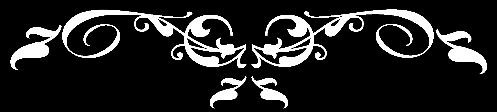

NewsPaper
NayePankh
Nayepankh foundation was initiated to bring a change and help people during the tough times of Covid. Later in the year, the NGO started to expand their operations and provide help to a wider section of the society. With this revamped vision, the NGO acquired the name of NayePankh – giving wings to uplift the underprivileged section of our society. NayePankh is one of the eminent NGOs espoused in providing food, sanitary napkins, clothes, educating underprivileged sectors of our society for the better future. We make efforts to solve daily problems faced by people of India. Most of the young women feel humiliating in public places during their menstrual cycle; to bring change we create awareness campaigns among woman and youths about personal hygiene, providing sanitary napkins. Also, in our endeavour to fight hunger we distribute food not only to the underprivileged community but also to the stray animals. We are also providing clothes to the poor families. Till date we have helped more than two lakhs of people. Although this seems quite a big achievement, but our goal is still not complete, therefore we’re continuing more with hustle. When lockdown was hitting hard, we took a decision and now we are a 12A and 80G certified NGO (that means if someone donates to NayePankh they will get a relief of 50%in income tax). The most striking feature about us is that we are completely led by the youths of our country, many of whom are still in their colleges and schools. We are on a mission to make this earth a better place to live for all creatures. We are here as 'BADALTE BHARAT KI NAYI TASVEER'!! Nayepankh foundation was initiated to bring a change and help people during the tough times of Covid. Later in the year, the NGO started to expand their operations and provide help to a wider section of the society. With this revamped vision, the NGO acquired the name of NayePankh – giving wings to uplift the underprivileged section of our society. NayePankh is one of the eminent NGOs espoused in providing food, sanitary napkins, clothes, educating underprivileged sectors of our society for the better future. We make efforts to solve daily problems faced by people of India. Most of the young women feel humiliating in public places during their menstrual cycle; to bring change we create awareness campaigns among woman and youths about personal hygiene, providing sanitary napkins.
Join Nayepankh Foundation and be part of our mission to create positive change in the world. Together, we can make a difference
Office
P.Road Kanpur
Whitefield, Bangalore
Karnataka, PIN 560066, India
carrer@nayepankh.com